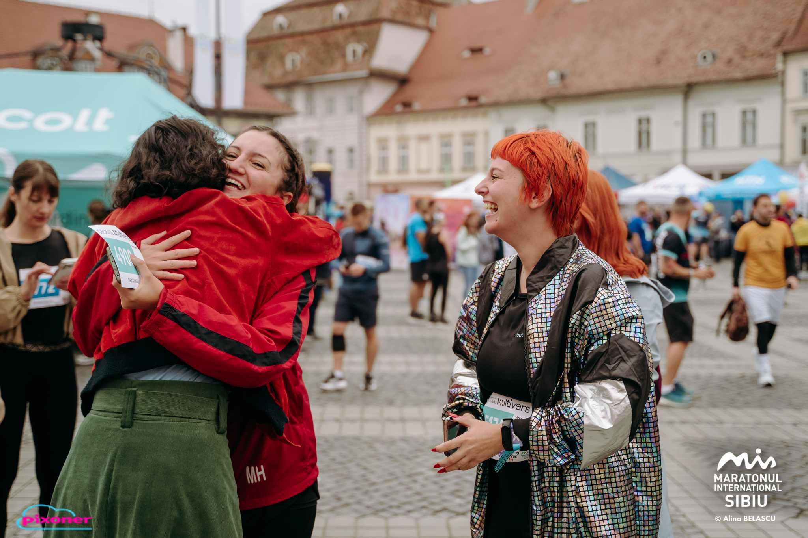

No items found.

S P A Ț I U
La Maratonul Internațional Sibiu, 45 de alergători au decis să alerge 344 de km (în total) pentru cauza S P
A Ț I U. În 26 mai, S P A Ț I U a luat viață datorită tuturor susținătorilor și alergătorilor care au donat
și sprijinit acest proiect.
Ok...dar ce înseamnă S P A Ț I U? În complexitatea cuvântului, organizația noastră percepe conceptul de spațiu ca pe o componentă obligatorie în bunul demers al vieții, fie că vorbim despre spațiul personal, spațiul de a te desfășura exact așa cum ești tu sau un spațiu fizic, unde sentimentul de apartenență este dezvoltat, unde găsești toate resursele necesare dezvoltării tale personale ori profesionale sau o gașcă de tineri faini și curajoși care să-ți fie aproape.
Asta ne-am propus noi și asta facem!
Prin suma strânsă din sprijinul tuturor celor implicați/implicate, am transformat sediul organizației noastre în locul unde tinerii își pun amprenta!
Din 8 septembrie, tinerii din comunitatea sibiană vor putea beneficia de acest loc timp de 4h în 2 zile ale săptămânii, lunea și miercurea (intervalele orare și activitățile săptămânii sunt postate pe paginile noastre de social media), cât și de activități formale sau informale organizate de către membrii YDV Sibiu.
De acum, fie că ne dorim să servim o cafea în liniște și să citim o carte sau să lucrăm la proiectele noastre, ne vom putea bucura de aceste lucruri prin faptul că avem un S P A Ț I U.
Proiectul S P A Ț I U este finanțat prin fondurile strânse de alergători și susținători prin intermediul Maratonului Internațional Sibiu 2025, un program al Fundației Comunitare Sibiu.
Ok...dar ce înseamnă S P A Ț I U? În complexitatea cuvântului, organizația noastră percepe conceptul de spațiu ca pe o componentă obligatorie în bunul demers al vieții, fie că vorbim despre spațiul personal, spațiul de a te desfășura exact așa cum ești tu sau un spațiu fizic, unde sentimentul de apartenență este dezvoltat, unde găsești toate resursele necesare dezvoltării tale personale ori profesionale sau o gașcă de tineri faini și curajoși care să-ți fie aproape.
Asta ne-am propus noi și asta facem!
Prin suma strânsă din sprijinul tuturor celor implicați/implicate, am transformat sediul organizației noastre în locul unde tinerii își pun amprenta!
Din 8 septembrie, tinerii din comunitatea sibiană vor putea beneficia de acest loc timp de 4h în 2 zile ale săptămânii, lunea și miercurea (intervalele orare și activitățile săptămânii sunt postate pe paginile noastre de social media), cât și de activități formale sau informale organizate de către membrii YDV Sibiu.
De acum, fie că ne dorim să servim o cafea în liniște și să citim o carte sau să lucrăm la proiectele noastre, ne vom putea bucura de aceste lucruri prin faptul că avem un S P A Ț I U.
Proiectul S P A Ț I U este finanțat prin fondurile strânse de alergători și susținători prin intermediul Maratonului Internațional Sibiu 2025, un program al Fundației Comunitare Sibiu.
